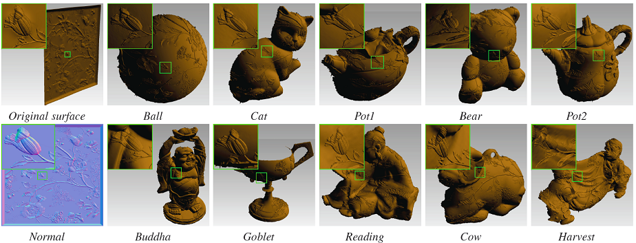
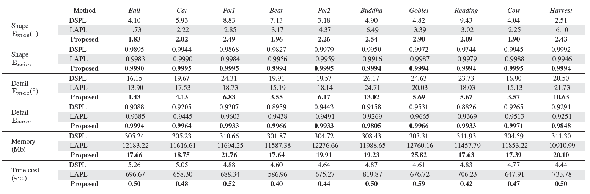

Surface Geometry Processing: An Efficient Normal-based Detail Representation
Wuyuan Xie, Miaohui Wang, Di Lin, Boxin Shi, and Jianmin Jiang
Abstract With the rapid development of high-resolution 3D vision applications, the traditional way of manipulating surface detail requires considerable memory and computing time. To address these problems, we introduce an efficient surface detail processing framework, which extracts new normal feature representations as the carrier of micro geometry structures that are illustrated both theoretically and empirically in this article. Compared with the existing state of the arts, we verify and demonstrate that the proposed normal-based representation has three important properties, including detail separability, detail transferability and detail invariance. Finally, three new schemes are further designed for geometric surface detail processing applications, including geometric texture synthesis, geometry detail transfer, and 3D surface super-resolution. Theoretical analysis and experimental results on the latest benchmark dataset verify the effectiveness and versatility of our normal-based representation, which accepts 30 times of the input surface vertices but at the same time only takes 6.5% memory cost and 14.0% running time in comparison with existing competing algorithms.
Fig.1: Illustration of the difference of surface geometry detail processing between the traditional 3D representations and the proposed 2D normal-based detail representation. Our method manipulates the 3D surface details in 2D normal domain, which aims to decouple a surface normal map into a shape component and detail component. We theoretically derive that the proposed detail component has the properties of separability, transferability, and invariance.
Based on the properties of the proposed detail component, three schemes are designed for surface geometry detail processing, including geometry detail transfer, geometric texture synthesis, and 3D surface super-resolution. The significance of the proposed framework is that, by taking the detail component as a feature carrier, the geometric surface texture is transformed to the intermediate feature map that can be processed as digital images.
Fig.2: Illustration of the three properties for the detail component. The Circular and Walnut models are used to demonstrate the three properties of the detail component, including separability, transferability, and invariance, respectively.
1. Geometric Texture Synthesis: In a practical texture synthesis, one common case is that the available source texture is not enough to be allocated on the target shape. One solution is to synthesize more similar textures from the source surface, in order to cover the entire target surface shape. Unfortunately, existing geometry texture synthesis methods have not been well developed to deal with a dense and irregular texture pattern. In this section, experiments are carried out by showing that the proposed detail component can be used as a feature map due to its detail separability, and hence it is possible to solve the problem of geometric texture synthesis.
Fig.3: Comparative illustration of geometric texture synthesis on the DiLiGenT dataset using the Lizard skin. The top row are the texture synthesis results of DGTS, while the bottom row are the synthesis results of the proposed method. From left to right: The SSIM results of the detail component in DGTS are 0.8729, 0.8924, 0.8465, 0.8594, 0.8766, 0.782, 0.8926, 0.8661, 0.8838, 0.8325, respectively. The SSIM results of the proposed method are 0.9995, 0.9967, 0.9911, 0.9972, 0.9913, 0.9888, 0.9946, 0.9934, 0.9975, 0.9859, respectively. Please zoom-in for details.
2. Geometry Detail Transfer: For geometry detail transfer, the detail component and shape component of the original and target surfaces are separated. The detail component of the original surface is transferred to the shape component of the target surface. The performance of the geometry detail transfer is evaluated and compared with two mesh-based surface editing methods. The whole geometric surface is transferred to a target shape, which is marked as global transfer (see Fig. 3). Different from the global transfer, local transfer (see Fig. 4) means that a local geometric feature is transferred to the target surface, which can be regarded as coarse-grained detail transfer.

Fig.4: Performance comparisons of the global transfer. The original model Flower is transferred on the DiLiGenT dataset. A zoom-in part is shown in the left-top green box.
Fig.5: Performance comparisons of the local transfer. Top row: The local face of Venus is replaced by Goethe, where the source Goethe has the total vertex number of 539, 352. Bottom row: The local face of Buddha is replaced by Goethe, where the source Goethe has the total vertex number of 334, 696. A partial zoom-in part is shown in the left-top green box.
Table.1: Quantitative results of the geometric detail transfer on the latest DiLiGenT dataset.

3. 3D Surface Super-resolution: The proposed detail component can also be applied to 3D surface super-resolution based on the existing learned CNN models. Specifically, for a low-resolution surface, we first decouple its normal map into the shape component and the detail component. Since the former is really smooth, it can be up-sampled by a simple method such as Bicubic. Since the latter is really complex, it can be enhanced by an advanced image-based super-resolution network. The enhanced detail component and the original shape component are then converted back, and finally the super-resolution 3D surface can be generated.
Fig.6: Comparison results of 3D surface super-resolution for the Panno model. The MAE and SSIM results of the proposed method are 4.92◦ and 0.9905, those of PU-Net are 24.39◦ and 0.8242, and those of RDN-Net are 6.61◦ and 0.9782, respectively.
References
[SfN] Wuyuan Xie, Yunbo Zhang, Charlie CL Wang, and Ronald C-K Chung. Surface-from-gradients: An approach based on discrete geometry processing. In IEEE Conference on Computer Vision and Pattern Recognition (CVPR), pages 2195–2202, 2014.
[DiLiGenT] Boxin Shi, Zhipeng Mo, Zhe Wu, Dinglong Duan, Sai-Kit Yeung, and Ping Tan. A benchmark dataset and evaluation for non-lambertian and uncalibrated photometric stereo. IEEE Transactions on Pattern Analysis and Machine Intelligence, 41(2):271–284, 2019.
[DGTS] Amir Hertz, Rana Hanocka, Raja Giryes, and Daniel Cohen-Or. Deep geometric texture synthesis. ACM Transactions on Graphics, 39(4), 2020.
[DSPL] Mario Botsch, Leif Kobbelt, Mark Pauly, Pierre Alliez, and Bruno L´evy. Polygon mesh processing. CRC press, 2010.
[LAPL] Olga Sorkine, Daniel Cohen-Or, Yaron Lipman, Marc Alexa, Christian R¨ossl, and H-P Seidel. Laplacian surface editing. In ACM SIGGRAPH Symposium on Geometry Processing, pages 175–184, 2004.
[PU-Net] Lequan Yu, Xianzhi Li, Chi-Wing Fu, Daniel Cohen-Or, and Pheng-Ann Heng. PU-net: Point cloud upsampling network. In IEEE Conference on Computer Vision and Pattern Recognition (CVPR), pages 2790–2799, 2018.
[RDN-Net] Yulun Zhang, Yapeng Tian, Yu Kong, Bineng Zhong, and Yun Fu. Residual dense network for image super-resolution. In IEEE Conference on Computer Vision and Pattern Recognition (CVPR), pages 2472–2481, 2018.